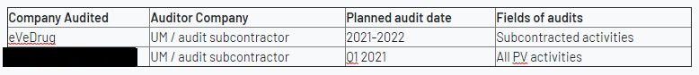

Editeur html
Pour le succès de l’application, il est indispensable de maîtriser un petit groupe de balises HTML, telles que, br, b, u, ul li, table tr th td.
Cliquez sur le bouton , utilisez la fenêtre « code view » en couleur noir pour editer le contenu.
Évitez d’utiliser <xxx> ou <DDD-MM-YYYY> dans la fenêtre « code view ». Il peut ne pas être visible dans la fenêtre « editor » en couleur blanche, car il considére que ce sont des blases HTML
Cliquez sur le bouton pour revenir à la fenêtre « editor » avant d'enregister, sinon il y a risque que la modification ne soit pas sauvegardée.
Utilisez toujours la fenêtre « code view » pour copier et coller
1. Saut de ligne, <br>
Utilisz <br> pour revenir à la ligne, et utilisz deux fois pour sauter une ligne
Seule cette balise n'est pas besoin de la balise de fermeture comme les autres balises.
Code:
Editeur veiw:
2. Texte en gras, <b>
Utilisz <b> pour la texte en gras
Code:
Editeur veiw:
3. Sous-ligne la texte , <u>
Utilise <u> pour sous-ligne la texte
Code:
Editeur veiw:
4. Faire une liste, <ul> <li>
Pour faire une liste, nous utilisons <ul> <li>
Code:
Editeur veiw:
5. Faire une table, <table> <tr> <th> <td>
- <tr> la nouvelle ligne
- <th> la colonne d'en-tête
- <td> la colonne du corps
- <table border="1"> la tableau avec bordure 1
- <table width="100%"> la tableau prendre 100% largeur
- <table cellpadding="0", cellspacing="0"> la tableau avec 0 cellpadding, 0 cellspacing
- <td colspan="3"> une cellule prend 3 colonnes
- <td rowspan="3"> une cellule prend 3 lignes
Code:
Editeur veiw:

6. Un espace
Pour créer un espace, nous utilisons Pour deux espaces, on le double